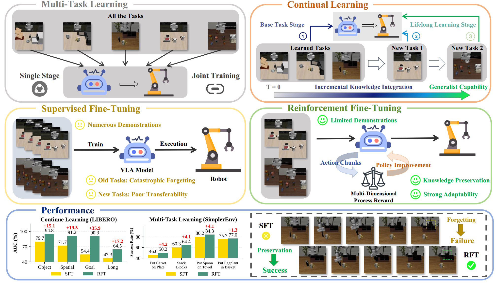

Pretrained on large-scale and diverse datasets, VLA models demonstrate strong generalization and
adaptability as general-purpose robotic policies.However, Supervised FineTuning (SFT), which serves as the
primary mechanism for adapting VLAs to
downstream domains, requires substantial amounts of task-specific data and is prone to catastrophic
forgetting.
To address these limitations, we propose LifeLong-RFT, a simple yet effective Reinforcement Fine-Tuning
(RFT) strategy for VLA models independent of online environmental feedback and pretrained reward models.
By integrating chunking-level on-policy reinforcement learning with the proposed Multi-Dimensional
Process Reward (MDPR) mechanism, LifeLong-RFT quantifies the heterogeneous contributions of intermediate
action chunks across three dimensions to facilitate policy optimization.
Specifically, (1) the Quantized Action Consistency Reward (QACR) ensures accurate action prediction
within the discrete action space; (2) the Continuous Trajectory Alignment Reward (CTAR) aligns decoded
continuous action chunks with reference trajectories to ensure precise control; (3) the Format Compliance
Reward (FCR) guarantees the structural validity of outputs.
Comprehensive experiments across SimplerEnv, LIBERO, and real-world tasks demonstrate that LifeLong-RFT
exhibits strong performance in multi-task learning. Furthermore, for continual learning on the LIBERO
benchmark, our method achieves a 22% gain in average
success rate over SFT, while effectively adapting to new tasks using only 20% of the training data.
Overall, our method provides a promising post-training paradigm for VLAs.